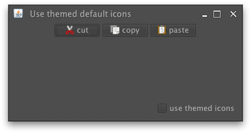
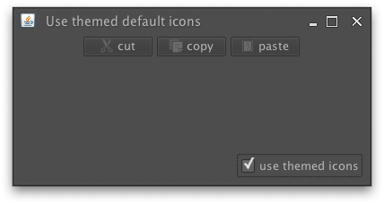
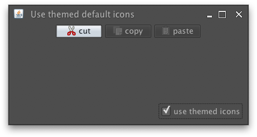

|
import java.awt.BorderLayout;
import java.awt.FlowLayout;
import java.awt.event.ActionEvent;
import java.awt.event.ActionListener;
import javax.swing.*;
import org.pushingpixels.substance.api.SubstanceLookAndFeel;
import org.pushingpixels.substance.api.skin.GraphiteSkin;
/**
* Test application that shows the use of the
* {@link SubstanceLookAndFeel#USE_THEMED_DEFAULT_ICONS} client property.
*
* @author Kirill Grouchnikov
* @see SubstanceLookAndFeel#USE_THEMED_DEFAULT_ICONS
*/
public class UseThemedDefaultIcons extends JFrame {
/**
* Creates the main frame for <code>this</code> sample.
*/
public UseThemedDefaultIcons() {
super("Use themed default icons");
this.setLayout(new BorderLayout());
final JPanel panel = new JPanel(new FlowLayout());
panel
.add(new JButton(
"cut",
new ImageIcon(
UseThemedDefaultIcons.class
.getResource("/org/pushingpixels/lafwidget/text/edit-cut.png"))));
panel
.add(new JButton(
"copy",
new ImageIcon(
UseThemedDefaultIcons.class
.getResource("/org/pushingpixels/lafwidget/text/edit-copy.png"))));
panel
.add(new JButton(
"paste",
new ImageIcon(
UseThemedDefaultIcons.class
.getResource("/org/pushingpixels/lafwidget/text/edit-paste.png"))));
this.add(panel, BorderLayout.CENTER);
JPanel controls = new JPanel(new FlowLayout(FlowLayout.RIGHT));
final JCheckBox useThemedIcons = new JCheckBox("use themed icons");
useThemedIcons.addActionListener(new ActionListener() {
public void actionPerformed(ActionEvent e) {
SwingUtilities.invokeLater(new Runnable() {
public void run() {
// based on the checkbox selection status, set the
// property
UIManager.put(
SubstanceLookAndFeel.USE_THEMED_DEFAULT_ICONS,
useThemedIcons.isSelected() ? Boolean.TRUE
: null);
UseThemedDefaultIcons.this.repaint();
}
});
}
});
controls.add(useThemedIcons);
this.add(controls, BorderLayout.SOUTH);
this.setSize(400, 200);
this.setLocationRelativeTo(null);
this.setDefaultCloseOperation(JFrame.EXIT_ON_CLOSE);
}
/**
* The main method for <code>this</code> sample. The arguments are ignored.
*
* @param args
* Ignored.
*/
public static void main(String[] args) {
JFrame.setDefaultLookAndFeelDecorated(true);
SwingUtilities.invokeLater(new Runnable() {
public void run() {
SubstanceLookAndFeel.setSkin(new GraphiteSkin());
new UseThemedDefaultIcons().setVisible(true);
}
});
}
}
The screenshot below shows a frame with three buttons when this property is not set:

The screenshot below the same frame when this property is set to
Boolean.TRUE. Note how the button icons are painted
in the theme colors:

The screenshot below the same frame when this property is set to
Boolean.TRUE and the mouse is hovering over the
first button. Note how the icon of this button is painted in the original colors, while
the other button icons are painted in the theme colors:

|